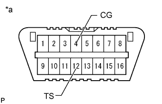
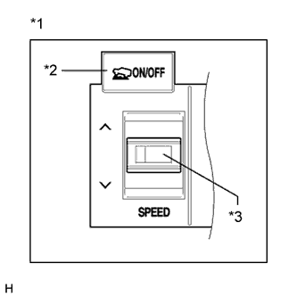
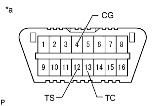

VEHICLE STABILITY CONTROL SYSTEM > TEST MODE PROCEDURE |
| TEST MODE (SIGNAL CHECK) PROCEDURE |
When using the intelligent tester:
Place the vehicle on a level surface with an inclination of less than 1%.
Turn the engine switch off.
Check that the shift lever is in P.
Connect the intelligent tester to the DLC3.
Turn the engine switch on (IG).
Turn the intelligent tester on.
Enter the following menus: Chassis / ABS/VSC/TRC / Utility / Signal Check.
Check that the ABS warning light and slip indicator light blink at 0.125 second intervals (0.125 seconds on and 0.125 seconds off).
Start the engine.
When using SST check wire:
Place the vehicle on a level surface with an inclination of less than 1%.
Turn the engine switch off.
Check that the shift lever is in P.
|  |
Using SST, connect terminals 12 (TS) and 4 (CG) of the DLC3.
| *a | Front view of DLC3 |
Turn the engine switch on (IG).
Check that the ABS warning light and slip indicator light blink at 0.125 second intervals (0.125 seconds on and 0.125 seconds off).
Start the engine.
ABS Signal Check
Master Cylinder Pressure Sensor and Acceleration Sensor Check
Keep the vehicle stationary on a level surface for 1 second or more.
With the vehicle stationary, release the brake pedal for 1 second or more, and then quickly depress the brake pedal with a force of 98 N (10 kgf, 22 lbf) or more for 1 second.
Check that the ABS warning light comes on for 3 seconds.
Center Differential Lock Detection Switch Check
Press the center differential lock switch to lock the center differential.
Press the center differential lock switch to unlock the center differential.
Speed Sensor Check
Drive the vehicle straight forward at a speed of 45 km/h (28 mph) or more for several seconds (forward signal check).
Check that the ABS warning light goes off.
Drive the vehicle in reverse for more than 1 second at 3 km/h (2 mph) or more (reverse signal check).
Check that the ABS warning light goes off.
Stop the vehicle.
VSC Signal Check
Downhill Assist Control Switch Check (w/ Downhill Assist Control)
Push the downhill assist control switch and check that the downhill assist control indicator light is blinking.
Turn the downhill assist control switch off.
|  |
Crawl Control Switch Check (w/ Crawl Control)
| *1 | Crawl Control Switch (Combination Switch) |
| *2 | ON/OFF Switch |
| *3 | Speed Selector Switch |
Push the ON/OFF switch and check that the crawl indicator light is on while the switch is being pushed.
Turn the ON/OFF switch off.
Set the target vehicle speed to L (low) with the speed selector switch.
Set the target vehicle speed to medium-low with the speed selector switch.
Set the target vehicle speed to M (medium) with the speed selector switch.
Set the target vehicle speed to medium-high with the speed selector switch.
Set the target vehicle speed to H (high) with the speed selector switch.
Set the target vehicle speed to L (low) with the speed selector switch.
VSC OFF Switch Check
Press the VSC OFF switch.
Check that the VSC OFF indicator light comes on.
Press the VSC OFF switch again to turn the VSC OFF indicator light off.
End of Signal Check
If the signal check is completed, the ABS warning light and slip indicator light blink (0.125 seconds on and 0.125 seconds off) when the vehicle is stopped and goes off while driving the vehicle.
Read test mode (signal check) DTCs (when using the intelligent tester).
Read the DTC(s) by following the intelligent tester screen.
Turn the engine switch off and disconnect the intelligent tester.
Read test mode (signal check) DTCs (when using SST check wire).
|  |
Using SST, connect terminals 13 (TC), 12 (TS) and 4 (CG) of the DLC3.
| *a | Front view of DLC3 |
Read the number of blinks of the ABS warning light and slip indicator light.
Disconnect SST from terminals 13 (TC), 12 (TS) and 4 (CG) of the DLC3.
| LIST OF TEST MODE (SIGNAL CHECK) DTC |
| DTC Code | Detection Item | Trouble Area | |
| Intelligent Tester Display | ABS Warning Light Display | ||
| C1271 | 71 | Front Speed Sensor RH Output Voltage Malfunction |
|
| C1272 | 72 | Front Speed Sensor LH Output Voltage Malfunction |
|
| C1273 | 73 | Rear Speed Sensor RH Output Voltage Malfunction |
|
| C1274 | 74 | Rear Speed Sensor LH Output Voltage Malfunction |
|
| C1275 | 75 | Abnormal Change in Output Signal of Front Speed Sensor RH |
|
| C1276 | 76 | Abnormal Change in Output Signal of Front Speed Sensor LH |
|
| C1277 | 77 | Abnormal Change in Output Signal of Rear Speed Sensor RH |
|
| C1278 | 78 | Abnormal Change in Output Signal of Rear Speed Sensor LH |
|
| C1279 | 79 | G Sensor Output Voltage Malfunction |
|
| C1281 | 81 | Master Cylinder Pressure Sensor Output Malfunction | Master cylinder solenoid (Master cylinder pressure sensor) |
| C1282 | 82 | Center Differential Lock Position Switch Malfunction |
|
| DTC Code | Detection Item | Trouble Area | |
| Intelligent Tester Display | Slip Indicator Light Display | ||
| C1379* | 74* | w/ Downhill Assist Control: Malfunction in downhill assist control switch w/ Crawl Control: Malfunction in crawl switch |
|